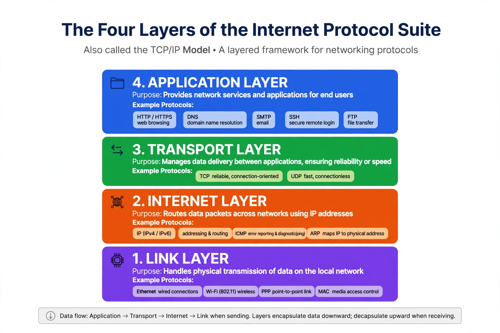

Internet protocol suite
| Internet protocol suite | |
|---|---|
| Developed by | Vint Cerf, Robert Kahn; IETF |
| Influenced | OSI model |
| Key protocols | IP, TCP, UDP, HTTP, DNS |

Diagram of the Internet protocol suite's four layers — link, internet, transport and application — with example protocols in each
The Internet protocol suite, commonly known as TCP/IP, is the set of communications protocols used in the Internet and similar computer networks. It provides end-to-end data communication specifying how data should be packetized, addressed, transmitted, routed, and received, and it underpins services such as the World Wide Web, email and file transfer.
The suite grew out of research funded by the US Department of Defense's DARPA in the 1970s. Vint Cerf and Robert Kahn published the foundational design in 1974, describing a Transmission Control Program that was later split into the Transmission Control Protocol (TCP) and the Internet Protocol (IP). The suite was adopted as the standard for the ARPANET on 1 January 1983 — a 'flag day' transition from the earlier NCP protocol.
Layers
Unlike the seven-layer OSI model, the Internet protocol suite is usually described with four abstraction layers. The link layer covers communication within a single network segment, using technologies such as Ethernet and Wi-Fi. The internet layer connects independent networks using IP, which delivers packets across network boundaries. The transport layer provides host-to-host communication: TCP offers reliable, ordered, connection-oriented delivery, while the User Datagram Protocol (UDP) offers a lightweight, unreliable datagram service. The application layer contains the protocols applications use directly, including HTTP for the web, SMTP for email and the Domain Name System.
Governance
Standards for the suite are developed openly by the Internet Engineering Task Force (IETF) and published as RFCs (Requests for Comments). Address allocation is coordinated by ICANN and the regional Internet registries. The suite's design principles — packet switching, the end-to-end principle, and robustness in the face of partial failure — are widely credited with the Internet's ability to scale from a research network to a global infrastructure.